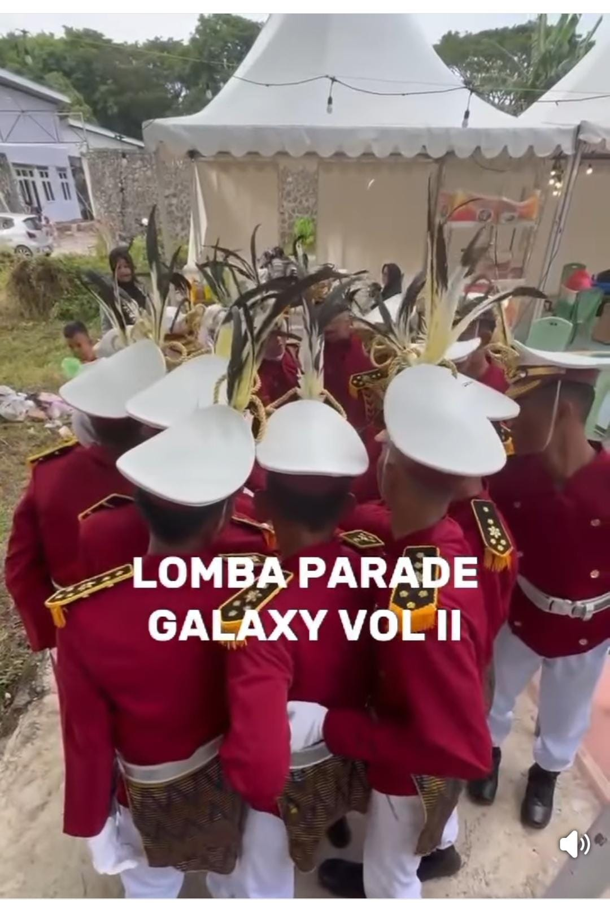
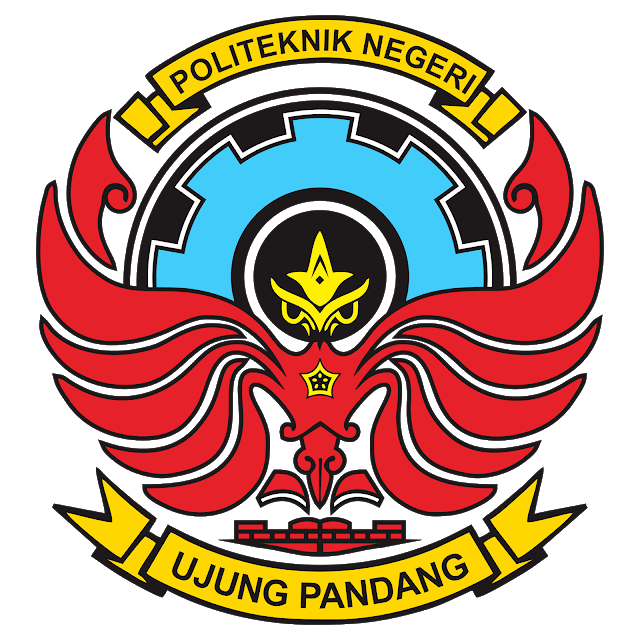
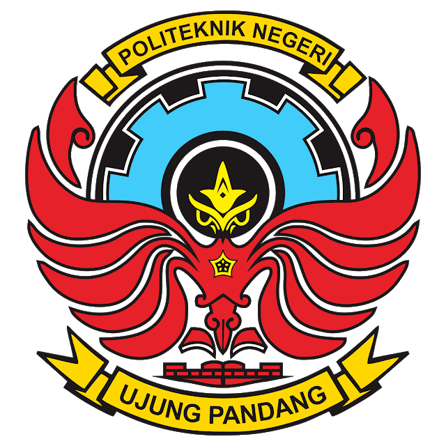

NEWS
Berita SMAN 9 Wajo

Lomba Parade Galaxy Vol 3 berlangsung dengan semarak dan penuh antusiasme dari seluruh peserta. Kegiatan ini menjadi ajang bergengsi yang mempertemukan berbagai tim terbaik dari berbagai sekolah, termasuk UPT SMA Negeri 9 Wajo, yang turut berpartisipasi dalam lomba ini.
Tim dari SMA Negeri 9 Wajo menunjukkan penampilan terbaik mereka dalam lomba baris-berbaris dengan formasi kreatif, langkah yang kompak, dan semangat juang yang tinggi. Dengan latihan intensif sebelumnya, setiap gerakan yang ditampilkan mencerminkan kekompakan tim serta kedisiplinan yang kuat. Sorakan dan tepuk tangan dari para penonton menambah semangat peserta selama perlombaan berlangsung.
Selain menjadi wadah kompetisi, Parade Galaxy Vol 3 juga menjadi ajang silaturahmi dan berbagi pengalaman antar peserta dari berbagai daerah. Kegiatan ini mengajarkan pentingnya kerja sama, sportivitas, dan semangat pantang menyerah dalam meraih prestasi.
Momentum ini memberikan pengalaman berharga sekaligus kebanggaan tersendiri bagi tim dan sekolah, menjadikan kegiatan ini salah satu kenangan manis dalam perjalanan mereka.

 
